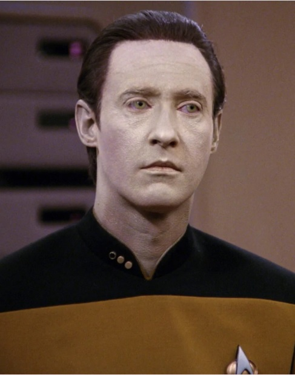

I want to live, however briefly, knowing that my life is finite. Mortality gives meaning to Human life, Captain. Peace, love, friendship, these are precious because we know they cannot endure. A butterfly that lives forever… is really not a butterfly at all.
—Star Trek: Picard, "Et in Arcadia Ego, Part 2"
STARFLEET PERSONNEL FILE: Data
Final Rank: Lieutenant Commander
Last assignment: Second Officer/Science Officer, U.S.S. Enterprise NCC-1701-E (was promoted to First Officer, but died prior to position taking effect)
Full Name: Data
Date of birth: Permanently re-activated Feb. 2, 2338 (initial activation unknown)
Place of birth: Omicron Theta science colony
Parents: Created by Dr. Noonien Soong and Dr. Juliana O'Donnell Soong Tainer
Education: Starfleet Academy, 2341-45
Marital status: Single
Children: One, deceased
Quarters: Formerly, Enterprise-D: Deck 2/Room 3653
Date of death:
2379
Service Awards: Starfleet Command Decoration for Valor; Starfleet Command Decoration for Gallantry; Medal of Honor, with Clusters; Legion of Honor; The Starcross